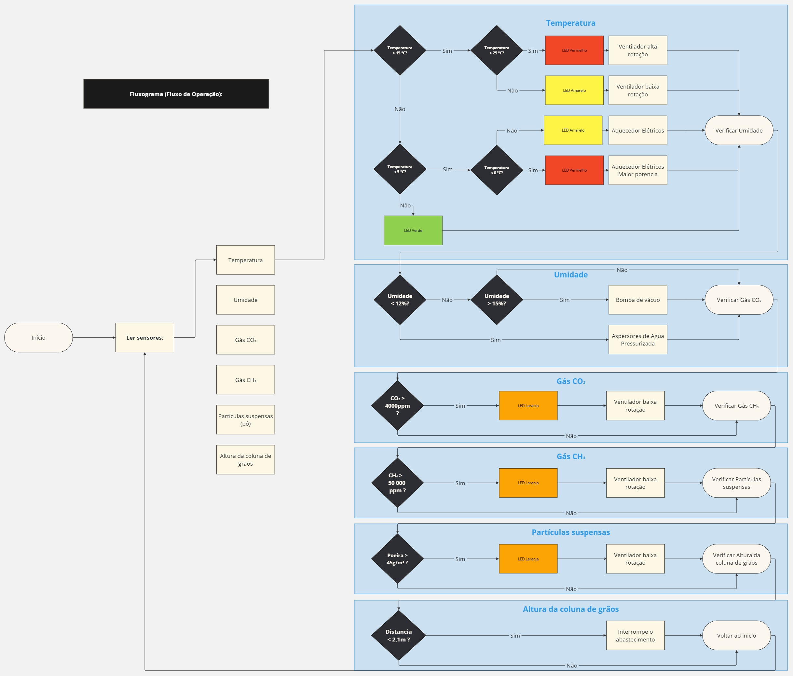
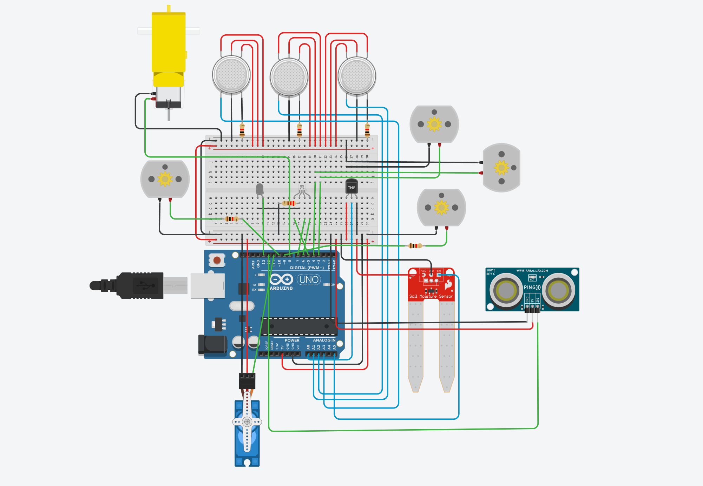

Automação de Silos
Sistema de sensores e atuadores para automação de silos de milho, focado em conservação e segurança.
Projeto do Sensor de Controle e Automação do Silo Virtual
Neste projeto, será apresentado um sistema de controle, monitoramento e automação do
silo, com o objetivo de evitar custos energéticos desnecessários e minimizar a perda de grãos,
assim como a degradação de suas propriedades devido a problemas de climatização. Essas
condições adversas podem levar à proliferação de microrganismos, especialmente fungos,
tornando o milho inadequado para determinados destinos e até inviabilizando seu uso,
resultando em prejuízos para os produtores. Além disso, outras questões podem surgir devido a
pragas e à germinação indesejada. Portanto, é essencial manter as condições do milho sob
controle.
O sensor também deve garantir a segurança dos trabalhadores, monitorando potenciais
perigos, como a presença de toxinas e o risco de explosões, ao verificar os níveis de CO₂, CH₄
e poeira de grão, que pode ser explosiva.
Fluxograma
Projeto Tinkercad
Foi desenvolvido um modelo do sistema no simulador virtual Tinkercad. Com os componentes fornecidos pelo Tinkercad, foi possível verificar o funcionamento do código e projetar o esquema de ligação, desenhando assim o esquema de montagem e do código.
Montagem Prototipo Físico
Após o código ser implementado no Tinkercad e as especificações dos componentes serem analisadas, iniciou-se a montagem do sistema. Foi necessário adaptar o código testado no Tinkercad devido às diferenças em alguns componentes e às limitações da plataforma. Além de ajustes nos pinos e adaptações de componentes, foi necessário baixar e instalar algumas bibliotecas para garantir o funcionamento correto do sistema, conforme detalhado no relatório. O processo de montagem e ajuste do código foi realizado em etapas, com cada sistema sendo testado individualmente. Abaixo os esquemas de montagem feitos para espelhar o prototipo físico.
esquemas de montagem
Temperatura
Esquema de montagem de
Controle de temperatura
Umidade
Esquema de montagem sistema de
Controle de umidade
Gases Tóxicos/Inflamáveis
Esquema de montagem sistema de
Controle de gases tóxicos e inflamáveis
Abastecimento do Silo
Esquema de montagem sistema de
Controle de abastecimento
Sistema Completo
Esquema de montagem sistema
Completo de controle
Imagem e Código do Prototipo Físico
A seguir o codigo final utilizado no prototipo fisico em funcionamento e uma foto do sitema montado.
Vídeos do Prototipo Físico
A seguir alguns vídeos explicativos do funcionamento do prototipo.